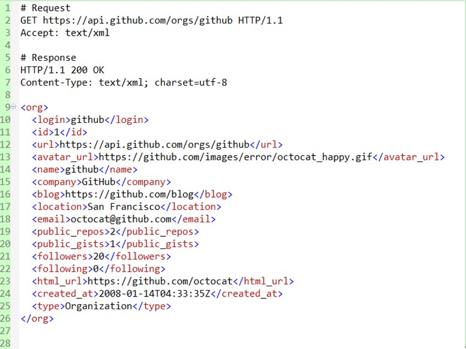
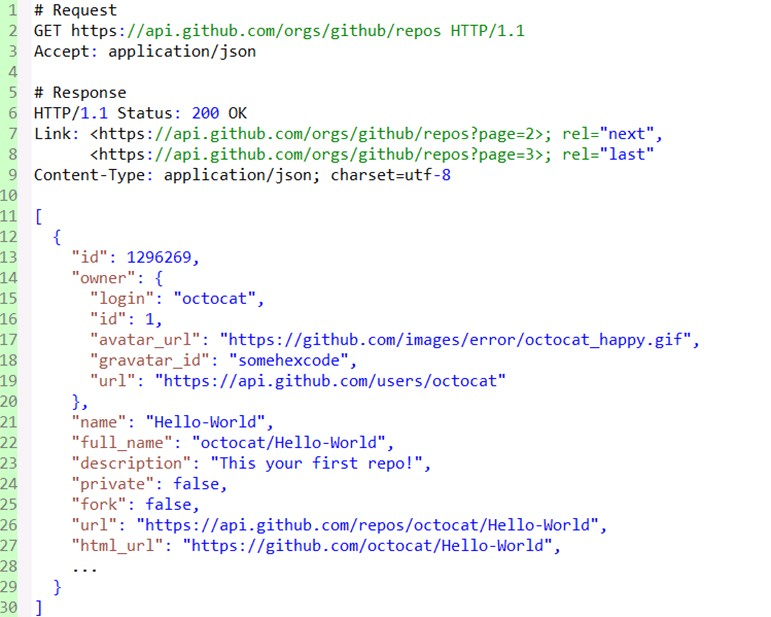

1. What is REST

REST stands for Representational State Transfer, which in Chinese means representational (editor's note: usually translated as representational) state transfer. It first appeared in Roy Fielding's doctoral dissertation in 2000. Roy Fielding is one of the main authors of the HTTP specification. In his dissertation, he mentioned: "The purpose of my writing this article is to understand and evaluate the architectural design of network-based application software under the premise of conforming to architectural principles, and to obtain an architecture with strong functionality, good performance, and suitable for communication. REST refers to a set of architectural constraints and principles." If an architecture meets the constraints and principles of REST, we call it a RESTful architecture.
REST itself does not create new technologies, components, or services. The idea behind RESTful is to use the existing features and capabilities of the Web, and to better utilize some of the guidelines and constraints in existing Web standards. Although REST itself is deeply influenced by Web technologies, theoretically the REST architectural style is not bound to HTTP; however, HTTP is currently the only instance related to REST. So the REST we describe here is also REST implemented through HTTP.
2. Understanding RESTful
To understand the RESTful architecture, we need to understand what the phrase Representational State Transfer actually means and what each of its words implies.
Below, combining REST principles, we will discuss around resources. From the perspectives of resource definition, acquisition, representation, association, and state transition, we will list some key concepts and explain them.
- Resources and URIs
- Uniform Resource Interface
- Resource Representations
- Resource Links
- State Transfer
2.1 Resources and URIs
REST stands for Representational State Transfer. So what exactly is being represented? It actually refers to resources. Anything, as long as it needs to be referenced, is a resource. A resource can be an entity (e.g., a mobile phone number) or just an abstract concept (e.g., value). Here are some examples of resources:
- A user's mobile phone number
- A user's personal information
- The GPRS package most users subscribe to
- Dependency relationship between two products
- Discount packages a user can apply for
- The potential value of a mobile phone number
To make a resource identifiable, a unique identifier is needed. On the Web, this unique identifier is the URI (Uniform Resource Identifier).
A URI can be seen as either the address of a resource or the name of a resource. If some information is not represented by a URI, it cannot be considered a resource, but only some information about a resource. The design of URIs should follow the addressability principle, be self-descriptive, and give people an intuitive association in form. Here, taking the GitHub website as an example, some fairly good URIs are given:
- https://github.com/git
- https://github.com/git/git
- https://github.com/git/git/blob/master/block-sha1/sha1.h
- https://github.com/git/git/commit/e3af72cdafab5993d18fae056f87e1d675913d08
- https://github.com/git/git/pulls
- https://github.com/git/git/pulls?state=closed
- https://github.com/git/git/compare/master…next
Now let's look at some tips for URI design:
- Use _ or - to make URIs more readable
In the past, URIs on the Web were all cold numbers or meaningless strings, but now more and more websites use _ or - to separate words, making URIs look more human-friendly. For example, the well-known open-source China community (OSChina) uses this style for its news addresses, such as http://www.oschina.net/news/38119/oschina-translate-reward-plan.
- Use / to represent the hierarchical relationship of resources
For example, the above /git/git/commit/e3af72cdafab5993d18fae056f87e1d675913d08 represents a multi-level resource, referring to a commit record of the git project of the git user. Another example: /orders/2012/10 can be used to represent order records for October 2012.
- Use ? to filter resources
Many people simply regard ? as a way to pass parameters, which can easily make URIs too complex and difficult to understand. You can use ? for filtering resources. For example, /git/git/pulls represents all pull requests of the git project, while /pulls?state=closed represents the closed pull requests of the git project. Such URLs usually correspond to query results under specific conditions or algorithm operation results.
- , or ; can be used to represent the relationship between resources at the same level
Sometimes when we need to represent the relationship between same-level resources, we can use , or ; to separate them. For example, if GitHub could compare the differences of a file between any two commit records, perhaps it could use /git/git /block-sha1/sha1.h/compare/e3af72cdafab5993d18fae056f87e1d675913d08;bd63e61bdf38e872d5215c07b264dcc16e4febca as the URI. However, GitHub currently uses ... to do this, for example /git/git/compare/master...next.
2.2 Uniform Resource Interface
A RESTful architecture should follow the uniform interface principle. The uniform interface contains a set of restricted, predefined operations. No matter what the resource is, it is accessed through the same interface. The interface should use standard HTTP methods such as GET, PUT, and POST, and follow the semantics of these methods.
If resources are exposed according to the semantics of HTTP methods, the interface will have the characteristics of safety and idempotence. For example, GET and HEAD requests are safe; no matter how many times they are requested, the server state will not change. GET, HEAD, PUT, and DELETE requests are idempotent; no matter how many times the resource is operated on, the result is always the same, and subsequent requests will not have more impact than the first.
The typical usages of GET, DELETE, PUT, and POST are listed below:
GET
- Safe and idempotent
- Retrieve a representation
- Retrieve a representation on change (cache)
- 200 (OK) - Indicates that the representation has been sent in the response
- 204 (No Content) - The resource has an empty representation
- 301 (Moved Permanently) - The resource's URI has been updated
- 303 (See Other) - Other (e.g., load balancing)
- 304 (Not Modified) - The resource has not been changed (cache)
- 400 (Bad Request) - Indicates a bad request (e.g., parameter errors)
- 404 (Not Found) - The resource does not exist
- 406 (Not Acceptable) - The server does not support the required representation
- 500 (Internal Server Error) - Generic error response
- 503 (Service Unavailable) - The server cannot currently handle the request
POST
- Not safe and not idempotent
- Create resources using server-managed (automatically generated) instance numbers
- Create child resources
- Partially update resources
- If it has not been modified, then do not update the resource (optimistic locking)
- 200 (OK) - If the existing resource has been changed
- 201 (Created) - If a new resource has been created
- 202 (Accepted) - The request has been accepted for processing but has not yet been completed (asynchronous processing)
- 301 (Moved Permanently) - The resource's URI has been updated
- 303 (See Other) - Other (e.g., load balancing)
- 400 (Bad Request) - Indicates a bad request
- 404 (Not Found) - The resource does not exist
- 406 (Not Acceptable) - The server does not support the required representation
- 409 (Conflict) - Generic conflict
- 412 (Precondition Failed) - Precondition failed (e.g., a conflict when performing a conditional update)
- 415 (Unsupported Media Type) - The received representation is not supported
- 500 (Internal Server Error) - Generic error response
- 503 (Service Unavailable) - The server cannot currently handle the request
PUT
- Not safe but idempotent
- Create a resource using a client-managed instance number
- Update a resource by replacing it
- If not modified, then update the resource (optimistic lock)
- 200 (OK) - if an existing resource has been changed
- 201 (created) - if a new resource has been created
- 301 (Moved Permanently) - the URI of the resource has changed
- 303 (See Other) - other (e.g., load balancing)
- 400 (bad request) - refers to a bad request
- 404 (not found) - the resource does not exist
- 406 (not acceptable) - the server does not support the required representation
- 409 (conflict) - general conflict
- 412 (Precondition Failed) - precondition failed (e.g., conflict when performing a conditional update)
- 415 (unsupported media type) - the received representation is not supported
- 500 (internal server error) - general error response
- 503 (Service Unavailable) - the service is currently unable to process the request
DELETE
- Unsafe but idempotent
- Delete resource
- 200 (OK) - the resource has been deleted
- 301 (Moved Permanently) - the URI of the resource has changed
- 303 (See Other) - other, e.g., load balancing
- 400 (bad request) - refers to a bad request
- 404 (not found) - the resource does not exist
- 409 (conflict) - general conflict
- 500 (internal server error) - general error response
- 503 (Service Unavailable) - the server is currently unable to process the request
Now let's look at some common problems in practice:
- What is the difference between POST and PUT when creating resources?
The difference between POST and PUT in creating resources is whether the name (URI) of the created resource is determined by the client. For example, to add a java category to my blog post, the generated path would be category name/categories/java, so the PUT method can be used. However, many people directly map POST, GET, PUT, DELETE to CRUD, as is done in a typical RESTful application implemented with Rails.
I think this is because Rails uses server-generated IDs as URIs by default, and many people practice REST through Rails, making it easy to cause such misunderstandings.
- Clients do not necessarily support all these HTTP methods, right?
It is true that this situation exists, especially with some older browser-based clients that only support GET and POST.
In practice, both client and server may need to make some compromises. For example, the Rails framework supports passing the real request method through a hidden parameter _method=DELETE, while client-side MVC frameworks like Backbone allow passing _method and setting the X-HTTP-Method-Override header to circumvent this issue.
- Does the uniform interface mean that methods with special semantics cannot be extended?
The uniform interface does not prevent you from extending methods, as long as the methods have specific, identifiable semantics for operations on resources and can maintain the uniformity of the entire interface.
For example, WebDAV extends HTTP methods by adding LOCK, UPLOCK, and other methods. GitHub's API also supports the PATCH method for updating issues, for example:
PATCH /repos/:owner/:repo/issues/:number
However, note that for non-standard HTTP methods like PATCH, the server needs to consider whether clients can support them.
- What guidance does the uniform resource interface provide for URIs?
The uniform resource interface requires using standard HTTP methods to operate on resources, so URIs should only represent the names of resources and should not include operations on resources.
In plain terms, URIs should not be described using actions. For example, the following URIs do not meet the requirements of the uniform interface:
- GET /getUser/1
- POST /createUser
- PUT /updateUser/1
- DELETE /deleteUser/1
If a GET request increments a counter, does this violate safety?
Safety does not mean that the request produces no side effects. For example, many API development platforms limit request traffic. GitHub, for instance, limits unauthenticated requests to 60 requests per hour.
But clients do not send these GET or HEAD requests in pursuit of side effects; the side effects are the server's own doing.
In addition, the server should not make the side effects too large in design, because clients assume these requests do not produce side effects.
- Is it acceptable to directly ignore caching?
Even if you use each verb according to its original intent, you can still easily disable the caching mechanism. The simplest way is to add a header in your HTTP response: Cache-control: no-cache. However, in doing so, you also lose support for efficient caching and revalidation (using mechanisms such as Etag).
For clients, when implementing a client for a REST-style service, you should also make full use of the existing caching mechanisms to avoid fetching representations again every time.
- Is handling response codes necessary?
HTTP response codes can be used to handle different situations. Correctly using these status codes means that clients and servers can communicate at a level with richer semantics.
For example, the 201 ("Created") response code indicates that a new resource has been created, and its URI is in the Location response header.
If you do not take advantage of the rich application semantics of HTTP status codes, you will miss opportunities to improve reusability, enhance interoperability, and increase loose coupling.
If these so-called RESTful applications must provide error information through response bodies, then SOAP is already like that and can satisfy it.
2.3 Resource Representations
It was mentioned above that clients can obtain resources through HTTP methods, right? No, to be precise, what clients obtain is only the representation of the resource. The external presentation of a resource can take multiple representation forms, and what is transmitted between client and server is also the representation of the resource, not the resource itself. For example, text resources can use formats such as html, xml, and json, while images can be displayed using PNG or JPG.
The representation of a resource includes data and metadata describing the data. For example, the HTTP header "Content-Type" is such a metadata attribute.
So how does the client know which representation form the server provides?
The answer is through HTTP content negotiation. The client can request a specific format of representation using the Accept header, and the server tells the client the representation form of the resource through Content-Type.
Taking GitHub as an example, request the json representation of an organization resource:

If GitHub could also support the xml representation format, the result would look like this:

Now let's look at some common designs in practice:
Include version numbers in the URI
Some APIs include version numbers in the URI, for example:
- http://api.example.com/1.0/foo
- http://api.example.com/1.2/foo
- http://api.example.com/2.0/foo
If we understand the version number as a different representation form of the resource, then we should use only one URL and distinguish it through the Accept header. Still taking GitHub as an example, its complete Accept format is: application/vnd.github[.version].param[+json]
For version v3, it would be Accept: application/vnd.github.v3. For the above example, you can similarly use the following header:
- Accept: vnd.example-com.foo+json; version=1.0
- Accept: vnd.example-com.foo+json; version=1.2
- Accept: vnd.example-com.foo+json; version=2.0
Use URI suffixes to distinguish representation formats
The Rails framework, for example, supports using /users.xml or /users.json to distinguish different formats. Such an approach is undoubtedly more intuitive for clients, but it mixes the name of the resource with the representation form of the resource. Personally, I think content negotiation should still be preferred for distinguishing representation formats.
How to handle unsupported representation formats
What should be done when the server does not support the requested representation format? If the server does not support it, it should return an HTTP 406 response, indicating that it refuses to process the request. Taking GitHub as an example, below is the result of requesting an XML representation of a resource:

2.4 Resource Links
We know that REST uses standard HTTP methods to operate on resources, but understanding it merely as a Web database architecture with CRUD is too simplistic.
This anti-pattern ignores a core concept: "hypermedia as the engine of application state". What is hypermedia?
When you browse web pages, jumping from one link to a page, then from another link to another page, you are using the concept of hypermedia: linking resources one by one.
To achieve this, links must be added to the representation formats to guide clients. In the book "RESTful Web Services", the author calls this characteristic of having links connectivity. Below, let's look at some specific examples.
Below is a request to GitHub to get the project list under an organization. You can see that a Link header is added in the response header to tell the client how to access the next page and the last page of records. In the response body, URLs are used to link to the project owner and project address.

Another example is the one below: after creating an order, links are used to guide the client on how to make payment.
{kind=link}
The above examples show how to use hypermedia to enhance the connectivity of resources. Many people spend a lot of time looking for beautiful URIs when designing RESTful architectures, but ignore hypermedia. Therefore, more time should be spent providing links in the representations of resources, rather than focusing on the "CRUD of resources".
2.5 State Transfer
With the above groundwork, it becomes easy to understand state transfer in REST.
However, let us first discuss the stateless communication principle in REST. At first glance, it seems contradictory: since it is stateless, how can there be state transfer?
In fact, the stateless communication principle mentioned here does not mean that the client application cannot have state, but rather that the server should not save client state.
2.5.1 Application State and Resource State
Actually, state should be distinguished into application state and resource state. The client is responsible for maintaining application state, while the server maintains resource state.
The interaction between the client and the server must be stateless, and each request must contain all the information needed to process that request.
The server does not need to retain application state between requests. Only when an actual request is received does the server pay attention to application state.
This stateless communication principle enables the server and intermediaries to understand independent requests and responses.
Across multiple requests, the same client no longer needs to depend on the same server, making it easier to implement highly scalable and highly available servers.
But sometimes we make designs that violate the stateless communication principle, such as using cookies to track a server-side session state, a common example being JSESSIONID in J2EE.
This means that the cookies sent by the browser with each request are used to build session state.
Of course, if the cookies store information that the server can verify without relying on session state (such as an authentication token), such cookies are also consistent with REST principles.
2.5.2 Transfer of Application State
State transfer is now easy to understand: the "session" state is not stored on the server as resource state, but is tracked by the client as application state. The client's application state changes under the guidance of hypermedia provided by the server. The server uses hypermedia to tell the client which subsequent states can be entered from the current state.
Links like "Next Page" serve this state-advancing function—guiding you on how to move from the current state to the next possible state.
3. Summary
Currently, projects such as Guangdong XXX version and XXX use traditional RPC and SOAP Web services, while the backend of the Mobile Southern Base XXXX project, although using JSON format for interaction, is still RPC-style. This article attempts to quickly understand the concepts behind RESTful architecture from the perspectives of resource definition, retrieval, representation, association, and state transition. RESTful architecture is very different from traditional RPC, SOAP and other approaches in philosophy. I hope this article can help you understand REST.
Click me to share notes
<p style="font-size:14px;">The note must be an extension of the content of this article!</p><br> <p style="font-size:12px;"><a href="../tougao.html" target="_blank">Article submission, click here</a></p> <p style="font-size:14px;"><a href="./runoob-user-test-intro.html" target="_blank">How to get a registration invite code</a></p> <h3 class="text-muted"><i class="fa fa-info-circle" aria-hidden="true"></i> Before sharing notes, you must <a href=".." class="runoob-pop">log in</a>!</h3> <p><a href="./runoob-user-test-intro.html" target="_blank">How to get a registration invite code</a></p>